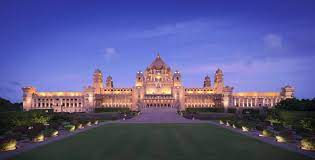
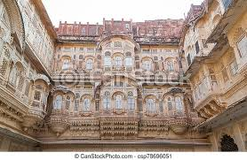

Jodhpur Palaces
1. Umaid Bhavan palaces:


Built in 1943, Umaid Bhavan Palace in Jodhpur is a wonderful amalgamation of a fascinating past and a luxurious present. It is, at the same time - a heritage hotel, a museum and the residence of the Royal Family of the present owner, Raja Gaj Singh. In addition to being of a historical landmark, the palace was commissioned in 1929, was built in order to provide employment to the drought and grief-stricken farmers of the area and thus took longer to complete.
2. Mehrangarh Fort:

Mehrangarh, also known as Mehran Fort was built by Rao Jodha in 1459 in Jodhpur, is one of the largest forts in the country. It is situated at the top of a 410 feet elevated hill and guarded by massive walls. One of the most easily recognisable forts in Jodhpur, it has appeared in many Hollywood and Bollywood productions such as The Lion King, The Dark Knight Rises, and the more recent - Thugs of Hindostan.
3. Indana Palace:

Indana Palace in Jodhpur is one of the most famous heritage hotels in Rajasthan. Situated just 3 kilometres from Jodhpur Airport, this Palace is an excellent blend of traditional Rajasthani culture and modern amenities. This Palace in Jodhpur is known for the various cultural programmes that take place here in the evenings. Puppet shows and folk dances are the main attractions among them.